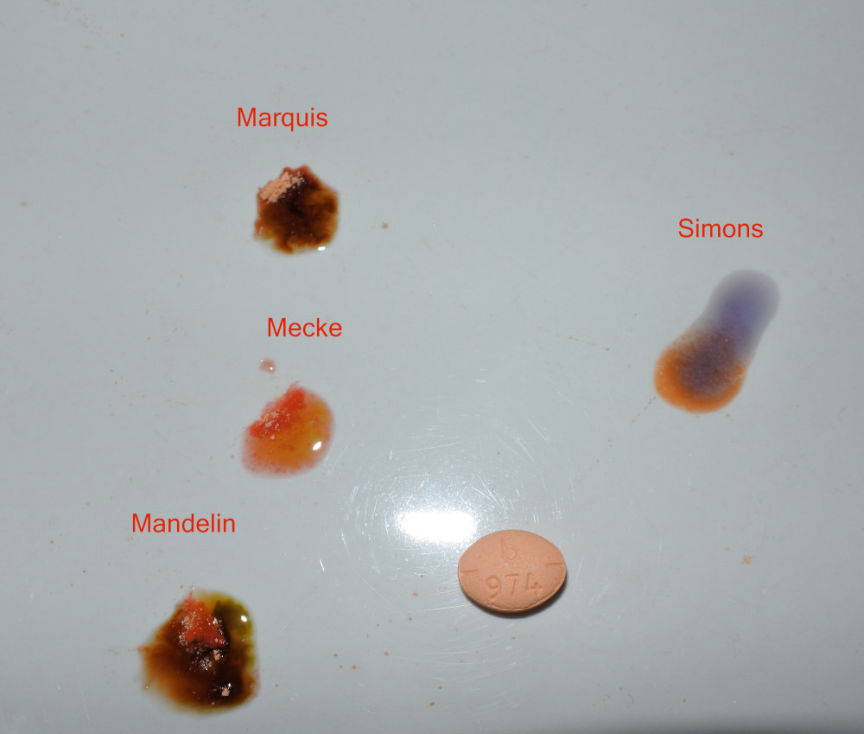
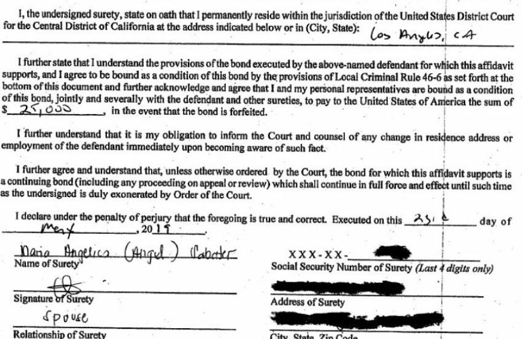
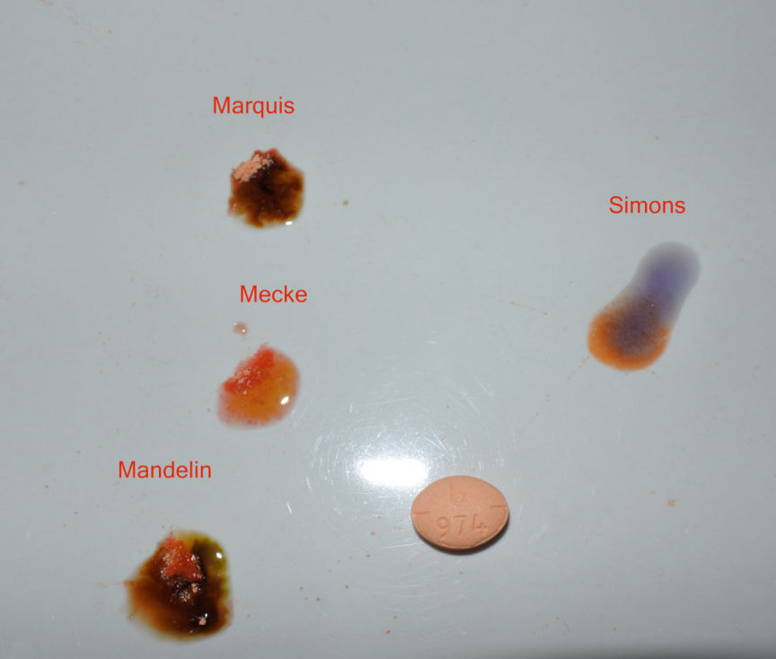
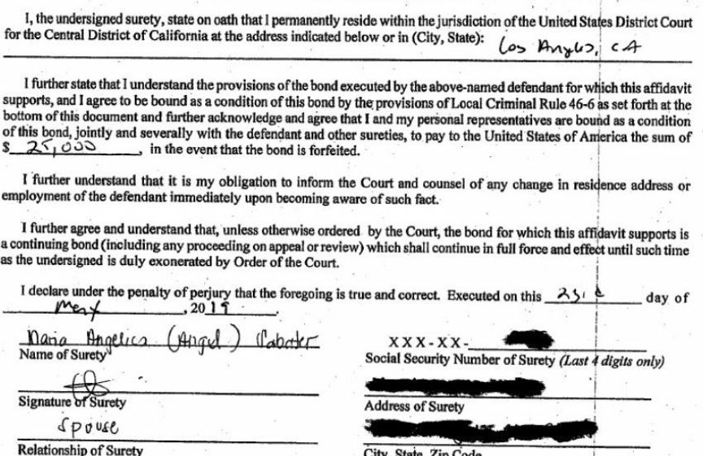

A Summary of the Investigation into the Darkweb Vendor "Adderallz"
~8 min read | Published on 2019-07-06, tagged Darkweb-Vendor using 1955 words.
A darkweb vendor known as “Adderallz” abruptly ended operations in May 2019 after federal law enforcement agents had identified and arrested two individuals suspected of drug trafficking in connection with a darkweb vendor account. In this article we explore the connection between the prolific darkweb vendor Adderallz and the two suspected methamphetamine traffickers.
Please contact this site if you have information or evidence that would help complete this article.Summary of the Investigation
Since late 2018, a taskforce of federal law enforcement agencies has been investigating amphetamine vendors on various darkweb marketplaces. Although most federal taskforces have been targeting opioid vendors, this one seemingly focused on vendors selling pharmaceuticals. When the Food and Drug Administration’s Office of Criminal Investigation is involved in a case such as this one, the target is usually prescription drugs or counterfeit prescription drugs.
The FDA-OCI, working with the Drug Enforcement Administration (DEA ) the Federal Bureau of Investigation (FBI), the United States Postal Inspection Service (USPIS), and Homeland Security Investigations (HSI) has been investigating amphetamine-based prescription drugs advertised and sold on Darknet Marketplaces, and distributed through the USPS.
FDA-OCI Special Agent Cox
Although the federal taskforce had only been working together for six months as of a court document filed in May 2019, agents from FDA-OCI made undercover purchases in April, May, and November 2018. They may have been conducting an investigation into vendors of counterfeit prescriptions prior to the creation of the aforementioned taskforce. This vendor was likely targeted for selling counterfeit Teva pills. The investigation seemingly began with undercover purchases and not a massive OPSEC failure.
Investigators discovered that the entity responsible for shipping the packages had been using Endicia, a subsidiary of Stamps.com, to purchase postage. Unlike Stampnik or Bitcoinpostage.info, Stamps.com requires an account in accordance with regulations from USPS.
According to Endicia, the Stamps.com subsidiary used by the suspected drug vendors, registration information is required by USPS:
The USPS requires you to register your name, telephone number and physical address from which your postage will be printed. This information will be used to create your Endicia account.
Law enforcement found the Stamps.com meter #11551888 on all four packages they had ordered from the Dream market vendor they had been investigating. They pulled records from Stamps.com in reference to the postage meter in question and found the account belonged to an individual identified as Leo Hu. The suspect had created the Endicia account with both his name and address. Payments for the Endicia account, though, originated from funds linked to a separate identity.
The identity, investigators learned, belonged to an individual with no knowledge of the operation. Hu had used the identity of “Victim-1” without permission from the victim. Court documents revealed that Hu often used the stolen identity to convert cryptocurrency to USD (likely through exchanges with KYC/AML requirements). The converted funds ultimately ended up in accounts under the victim’s identity. Hu allegedly used these accounts to finance the Endicia account. Endicia requires members to pay a monthly fee to use their services. The price depends on various factors such as the size of the company using the service and the number of packages the company ships to customers.
The packages received by undercover law enforcement agents contained the products described by the darkweb vendor: pressed adderall pills described by law enforcement as “peach in color, oval in shape, and bearing pill imprint b 974 on one side and 30 and a half tablet score on the reverse.” They had one difference though. The vendor had listings for pills containing amphetamine salts. Laboratory testing revealed that the pills contained methamphetamine instead of amphetamine.
During surveillance of Hu, Agents observed Hu transferring boxes at numerous times to and from individuals including an unnamed co-conspirator (CC -1) CC -1 was subsequently observed depositing parcels at a USPS facility. A subsequent search of the parcels deposited into the mail stream by CC -1 revealed counterfeit Adderall containing methamphetamine.
CC-1 is identified in his own criminal complaint as Tzu Yang Lin a/k/a Isaac Lin.
[A]gents familiar with the investigation indicate that an individual or individuals utilizing the VENDOR-1 moniker has been operating on multiple Darknet Marketplaces since at least 2017, is responsible for more than 28,000 individual sales on Dream Market alone
During the investigation into Hu, law enforcement simultaenesly investigated Hu’s alleged co-conspirator Tzu Yang Lin a/k/a Isaac Lin. Towards the end of the investigation, investigators watched Lin take a container from his residence and place it in his vehicle. He drove to the City of Industry Post Office in Industry, California. Lin emptied the container into a USPS-owned bin at the Post Office. Law enforcement then retrieved all 87 packages Lin had deposited. The packages had postage that matched the Stamps.com meter found on the packages ordered from the darkweb vendor on Dream Market.

Although Lin and his wife had fairly expensive vehicles and took vacations to Nepal, they lived fairly regularly compared to OxyGod. Pictured is Lin’s Lexus IS350.
On May 21, 2019, the Honorable Steve Kim, United States Magistrate Judge for the Central District of California, authorized a search warrant for the eighty-seven (87) seized parcels. A search of the eighty-seven (87) parcels revealed approximately 1.573 kg of tablets in total, peach in color, oval in shape, and bearing pill imprint b 974 on one side and 30 and a half tablet score on the reverse. These pills are consistent with the tablets previously purchased by undercover a gents which laboratory testing revealed contained methamphetamine.
Law enforcement raided Hu’s home and Lin’s home on May 22, 2019. Both suspects had more than 500 grams worth of counterfeit Adderall pills in their homes. Hu also had a pill press and various punches and dies.
Both suspects confessed to law enforcement officers that they had been distributing counterfeit Adderall pills. They admitted they had worked with at least one co-conspirator and that they had been shipping the pills to customers through the USPS.
Both Lin and Hu have been charged with a count of possession with intent to distribute at least 500 grams of methamphetamine. There is some disbute as to the alleged roles played by the suspects in the context of distribution through the darkweb.The Case for Adderallz
Many people know the prolific vendor Adderallz was the unnamed vendor account in the “Stamps.com bust.” Although no official sources have confirmed this information, sources close to the case and loads of circumstantial evidence have positively linked Lin and Hu to the Adderallz account.
A few examples for those out of the loop:
Law enforcement reported that they had received counterfeit Adderall oval pills with “b974” on one side. The description matches the Adderall produced by the pharmaceutical company Teva. Teva Pharmaceuticals produces 30mg Adderall with the “b974” marking. On Dream Market, Adderallz wrote that the product they sold was “a replica of the football-shaped “b974” 30mg from Teva Pharmaceuticals.” Adderallz claimed in their Dream market profile that all packs shipped from the West Coast of the United States. Both Lin and Hu shipped from the West Coast. Buyers have confirmed both to darknetlive and to other users on Dread that packages came from the Post Office mentioned in the article. Buyers have confirmed both to darknetlive and to other users on Dread that Adderallz used Endicia/Stamps.com to purchase postage. Law enforcement alleged that Hu had an Endicia account under his name and address and that he had been using the account to pay for postage as a part of the drug trafficking conspiracy. After law enforcement seized the 87 packages that Lin had dropped off at the Post Office, customers of Adderallz reported having the tracking information stuck at “Shipping label has been created.” Many customers reported that their packs never arrived. Lin and Hu allegedly shipped fake Teva Adderall pills that contained methamphetamine. It is common knowledge that Adderallz pressed their pills with methamphetamine instead of amphetamine. This has been confirmed privately as well.

Picture and test via /u/DoctorGonzo on Dread
The FDA-OCI claimed, in the criminal complaint, that the Adderall vendor under investigation by law enforcement had “more than 28,000 individual sales on Dream Market alone.” Adderallz, on Dream Market, has roughly 30,000 sales. Very few Adderall vendors (especially counterfeit Teva vendors) have had such a high rating on Dream Market.
There are some oddities as well
Edit: The Federal Bureau of Prisons has records for an inmate named Tzu Yang Lin. The inmate left MDC Los Angeles on May 23. Although the listing could have been for a different Tzu Yang Lin, Lin’s spouse signed his bail application on May 23.
The application was also approved on May 23. Not May 28 as stated below. The Probation Office also obtained Lin’s passport on May 23. That would, however, mean that authorities placed Lin in MDC Los Angeles and then pulled him back out remarkably quickly.
Lin was freed on bond. Hu was considered a flight risk and kept in police custody. The court freed Lin on May 28. An entity set the Adderallz profile to vacation mode on June 1–three days after Lin’s release but more than a week since law enforcement had raided both suspects for alleged methamphetamine distribution. Someone with control of the Adderallz vendor account on Empire Market posted an update (after the Adderallz account entered vacation mode) that claimed an issue with an employee had caused the delay. After the login to Empire Market, users noticed new feedback on the account. Many of the reviews seemingly came from repeat customers that had frequently left feedback for Adderallz. Some suspect this behavior indicates that Adderallz pads their feedback and continued to pad feedback after the arrest in an effort to preserve the status of the account.
Lin padded the feedback of a company he had started in 2016 using various aliases. Hardly evidence but an indication that the concept is not a foreign one. Real reviews reveal that Lin may have taken money from real customers before shutting down and ending operations in 2017.
(Revised – see below) The account then went inactive for several weeks before logging on again on July 1 and posting the following update:
I am still working through some employee related issues that have led to some packages not getting delivered or processed correctly. I am refunding all of the orders that were not delivered. I’m doing my best to establish a new shipping process and in the meantime I will not be accepting orders. Thanks for the patience.
A source provided me with information that disputed the “inactive for several weeks” claim. They said that the Adderallz account had been active but showed all the signs typically seen during an exit scam. They then entered vacation mode. The final login was July 1 but they had posted the message seen above at an earlier date.
It is worth noting that a scammer is operating on markets as TheAdderallz with an almost identical profile. The scammer is allegedly cancelling orders and requesting that users contact him via Wickr. Adderallz never had a Wickr account and never requested users contact him off a marketplace unless the marketplace went offline. Lin does have a Signal account associated with his personal phone number but I highly doubt he offered his personal phone number to potential customers on darkweb markets.
Update: A source provided me with information that Adderallz, in May, had asked a customer to send funding to an address through Wickr.
Please contact me if you have information to add.
If you want to look for your own information on the suspects, you will have success searching for them under their aliases. Both had companies registered at their home addresses. Since family members are involved in the lives of Lin (and possibly Hu), I would prefer not to add information that would be unnecessarily invasive.
Sources
Bureau of Prisons Website
Adderallz pressed pills reagent test results
All of the Dread posts and comments linked in the article.
Please contact this site if you have information or evidence that would help complete this article.Summary of the Investigation
Since late 2018, a taskforce of federal law enforcement agencies has been investigating amphetamine vendors on various darkweb marketplaces. Although most federal taskforces have been targeting opioid vendors, this one seemingly focused on vendors selling pharmaceuticals. When the Food and Drug Administration’s Office of Criminal Investigation is involved in a case such as this one, the target is usually prescription drugs or counterfeit prescription drugs.
The FDA-OCI, working with the Drug Enforcement Administration (DEA ) the Federal Bureau of Investigation (FBI), the United States Postal Inspection Service (USPIS), and Homeland Security Investigations (HSI) has been investigating amphetamine-based prescription drugs advertised and sold on Darknet Marketplaces, and distributed through the USPS.
FDA-OCI Special Agent Cox
Although the federal taskforce had only been working together for six months as of a court document filed in May 2019, agents from FDA-OCI made undercover purchases in April, May, and November 2018. They may have been conducting an investigation into vendors of counterfeit prescriptions prior to the creation of the aforementioned taskforce. This vendor was likely targeted for selling counterfeit Teva pills. The investigation seemingly began with undercover purchases and not a massive OPSEC failure.
Investigators discovered that the entity responsible for shipping the packages had been using Endicia, a subsidiary of Stamps.com, to purchase postage. Unlike Stampnik or Bitcoinpostage.info, Stamps.com requires an account in accordance with regulations from USPS.
Encidia Advertisement
According to Endicia, the Stamps.com subsidiary used by the suspected drug vendors, registration information is required by USPS:
The USPS requires you to register your name, telephone number and physical address from which your postage will be printed. This information will be used to create your Endicia account.
Law enforcement found the Stamps.com meter #11551888 on all four packages they had ordered from the Dream market vendor they had been investigating. They pulled records from Stamps.com in reference to the postage meter in question and found the account belonged to an individual identified as Leo Hu. The suspect had created the Endicia account with both his name and address. Payments for the Endicia account, though, originated from funds linked to a separate identity.
The identity, investigators learned, belonged to an individual with no knowledge of the operation. Hu had used the identity of “Victim-1” without permission from the victim. Court documents revealed that Hu often used the stolen identity to convert cryptocurrency to USD (likely through exchanges with KYC/AML requirements). The converted funds ultimately ended up in accounts under the victim’s identity. Hu allegedly used these accounts to finance the Endicia account. Endicia requires members to pay a monthly fee to use their services. The price depends on various factors such as the size of the company using the service and the number of packages the company ships to customers.
The packages received by undercover law enforcement agents contained the products described by the darkweb vendor: pressed adderall pills described by law enforcement as “peach in color, oval in shape, and bearing pill imprint b 974 on one side and 30 and a half tablet score on the reverse.” They had one difference though. The vendor had listings for pills containing amphetamine salts. Laboratory testing revealed that the pills contained methamphetamine instead of amphetamine.
During surveillance of Hu, Agents observed Hu transferring boxes at numerous times to and from individuals including an unnamed co-conspirator (CC -1) CC -1 was subsequently observed depositing parcels at a USPS facility. A subsequent search of the parcels deposited into the mail stream by CC -1 revealed counterfeit Adderall containing methamphetamine.
CC-1 is identified in his own criminal complaint as Tzu Yang Lin a/k/a Isaac Lin.
[A]gents familiar with the investigation indicate that an individual or individuals utilizing the VENDOR-1 moniker has been operating on multiple Darknet Marketplaces since at least 2017, is responsible for more than 28,000 individual sales on Dream Market alone
During the investigation into Hu, law enforcement simultaenesly investigated Hu’s alleged co-conspirator Tzu Yang Lin a/k/a Isaac Lin. Towards the end of the investigation, investigators watched Lin take a container from his residence and place it in his vehicle. He drove to the City of Industry Post Office in Industry, California. Lin emptied the container into a USPS-owned bin at the Post Office. Law enforcement then retrieved all 87 packages Lin had deposited. The packages had postage that matched the Stamps.com meter found on the packages ordered from the darkweb vendor on Dream Market.
Isaac Lin Lexus
Although Lin and his wife had fairly expensive vehicles and took vacations to Nepal, they lived fairly regularly compared to OxyGod. Pictured is Lin’s Lexus IS350.
On May 21, 2019, the Honorable Steve Kim, United States Magistrate Judge for the Central District of California, authorized a search warrant for the eighty-seven (87) seized parcels. A search of the eighty-seven (87) parcels revealed approximately 1.573 kg of tablets in total, peach in color, oval in shape, and bearing pill imprint b 974 on one side and 30 and a half tablet score on the reverse. These pills are consistent with the tablets previously purchased by undercover a gents which laboratory testing revealed contained methamphetamine.
Law enforcement raided Hu’s home and Lin’s home on May 22, 2019. Both suspects had more than 500 grams worth of counterfeit Adderall pills in their homes. Hu also had a pill press and various punches and dies.
Both suspects confessed to law enforcement officers that they had been distributing counterfeit Adderall pills. They admitted they had worked with at least one co-conspirator and that they had been shipping the pills to customers through the USPS.
Both Lin and Hu have been charged with a count of possession with intent to distribute at least 500 grams of methamphetamine. There is some disbute as to the alleged roles played by the suspects in the context of distribution through the darkweb.The Case for Adderallz
Many people know the prolific vendor Adderallz was the unnamed vendor account in the “Stamps.com bust.” Although no official sources have confirmed this information, sources close to the case and loads of circumstantial evidence have positively linked Lin and Hu to the Adderallz account.
A few examples for those out of the loop:

Adderallz Adderall Test
Picture and test via /u/DoctorGonzo on Dread
There are some oddities as well
Edit: The Federal Bureau of Prisons has records for an inmate named Tzu Yang Lin. The inmate left MDC Los Angeles on May 23. Although the listing could have been for a different Tzu Yang Lin, Lin’s spouse signed his bail application on May 23.
The application was also approved on May 23. Not May 28 as stated below. The Probation Office also obtained Lin’s passport on May 23. That would, however, mean that authorities placed Lin in MDC Los Angeles and then pulled him back out remarkably quickly.
I am still working through some employee related issues that have led to some packages not getting delivered or processed correctly. I am refunding all of the orders that were not delivered. I’m doing my best to establish a new shipping process and in the meantime I will not be accepting orders. Thanks for the patience.
It is worth noting that a scammer is operating on markets as TheAdderallz with an almost identical profile. The scammer is allegedly cancelling orders and requesting that users contact him via Wickr. Adderallz never had a Wickr account and never requested users contact him off a marketplace unless the marketplace went offline. Lin does have a Signal account associated with his personal phone number but I highly doubt he offered his personal phone number to potential customers on darkweb markets.
Update: A source provided me with information that Adderallz, in May, had asked a customer to send funding to an address through Wickr.
Please contact me if you have information to add.
If you want to look for your own information on the suspects, you will have success searching for them under their aliases. Both had companies registered at their home addresses. Since family members are involved in the lives of Lin (and possibly Hu), I would prefer not to add information that would be unnecessarily invasive.
Sources
Bureau of Prisons Website
Adderallz pressed pills reagent test results
All of the Dread posts and comments linked in the article.